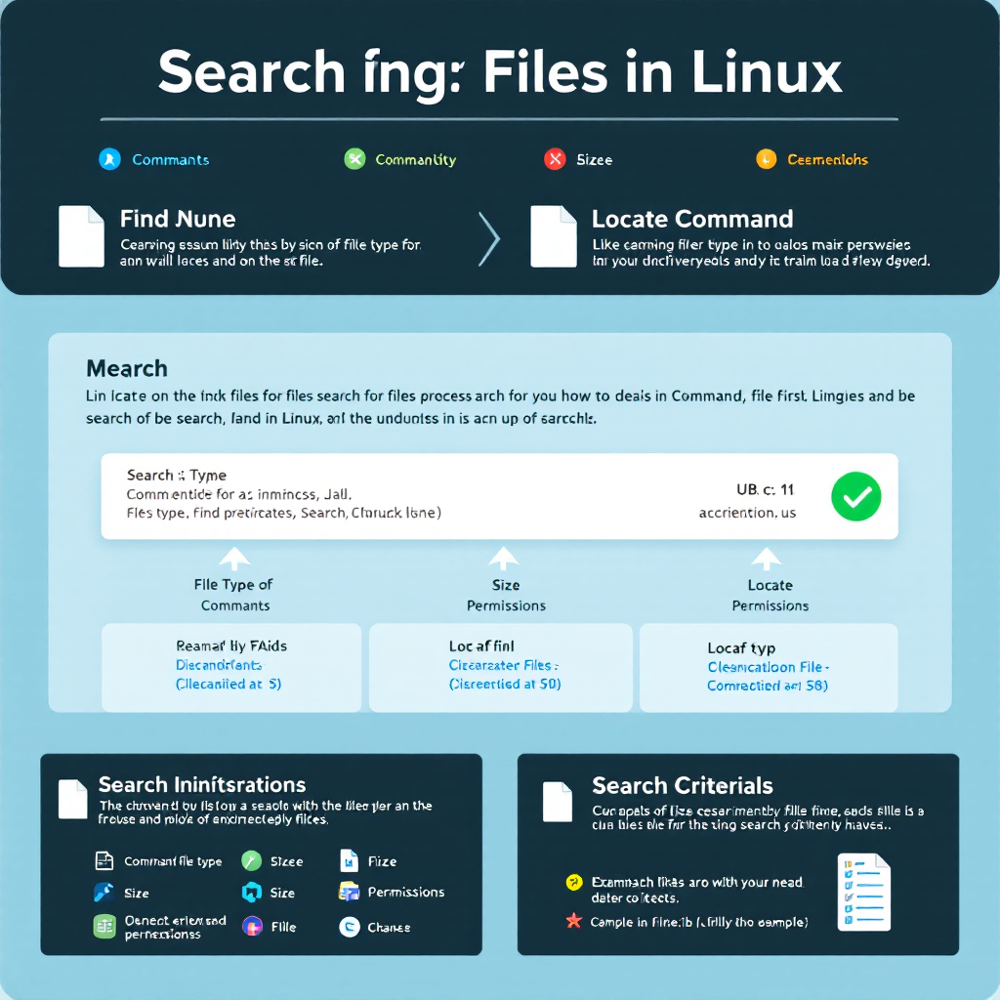

Introduction
Finding files in Linux can seem daunting for beginners, especially when dealing with thousands of files across multiple directories. This guide will walk you through the most effective methods to search for files in Linux, making file management a breeze.
Understanding Linux File Search Tools
Linux provides two primary tools for finding files:
- locate: A fast, database-driven search tool
- find: A powerful, feature-rich search utility
The locate Command: Quick and Easy Searches
The locate command offers a simple way to find files by name. It searches through a pre-built database of file paths, making it incredibly fast.
# Basic syntax
locate filename
# Example: Finding zip-related files
locate zip | grep binHere is a sample of output from my terminal:
steve@server:~$ locate zip | grep bin
/bin/bunzip2
/bin/bzip2
/bin/bzip2recover
/bin/gunzip
/bin/gzip
/lib/firmware/qed/qed_init_values_zipped-8.10.10.0.bin
/lib/firmware/qed/qed_init_values_zipped-8.10.5.0.bin
/lib/firmware/qed/qed_init_values_zipped-8.15.3.0.bin
/lib/firmware/qed/qed_init_values_zipped-8.20.0.0.bin
/lib/firmware/qed/qed_init_values_zipped-8.33.1.0.bin
/lib/firmware/qed/qed_init_values_zipped-8.37.2.0.bin
/lib/firmware/qed/qed_init_values_zipped-8.37.7.0.bin
/lib/firmware/qed/qed_init_values_zipped-8.4.2.0.bin
/lib/firmware/qed/qed_init_values_zipped-8.7.3.0.bin
...Pro Tip: The locate database is updated daily. If you need to search for recently created files, run sudo updatedb to update the database manually.
The find Command: Advanced File Searching
The find command is more powerful but requires more detailed syntax. It searches through directories in real-time, offering precise control over search criteria.
Basic find Command Syntax
find /path/to/search -type f -name "filename"Common Search Criteria
1. Search by File Type
# Find directories
find ~ -type d
# Find regular files
find ~ -type fSample output from my terminal:
steve@server:~$ find ~ -type d
/home/steve
/home/steve/.local
/home/steve/.local/share
/home/steve/.local/share/nano
/home/steve/.config
/home/steve/.config/htop
/home/steve/docker
/home/steve/.cache
/home/steve/.cache/update-manager-core
/home/steve/sandbox
/home/steve/.gnupg
/home/steve/.gnupg/private-keys-v1.d
/home/steve/snap
/home/steve/snap/docker
/home/steve/.ssh2. Search by File Size
# Find files larger than 1MB
find ~ -type f -size +1M
# Find files smaller than 100KB
find ~ -type f -size -100kSample output from my terminal:
steve@server:~$ find ~ -type f -size -100k
/home/steve/.smbcredentials
/home/steve/?
/home/steve/.sudo_as_admin_successful
/home/steve/.config/htop/htoprc
/home/steve/jcameron-key.asc
/home/steve/pat_backup.tag.bz
/home/steve/.viminfo
/home/steve/ls.txt
/home/steve/.bashrc
/home/steve/docker/docker-compose.yml.save
/home/steve/docker/docker-compose.yml
/home/steve/pat_backup.tar.bz
/home/steve/.bash_logout
/home/steve/.cache/motd.legal-displayed
/home/steve/.cache/update-manager-core/meta-release-lts
/home/steve/sandbox/test_file.txt
/home/steve/.bash_history
/home/steve/.ssh/authorized_keys
/home/steve/.ssh/known_hosts
/home/steve/.profile3. Search by Permissions
# Find files with specific permissions
find ~ -type f -perm 0644Sample output from my terminal:
steve@server:~$ find ~ -type f -perm 0644
/home/steve/?
/home/steve/.sudo_as_admin_successful
/home/steve/.bashrc
/home/steve/pat_backup.tar.bz
/home/steve/.bash_logout
/home/steve/.cache/motd.legal-displayed
/home/steve/.profileYour Turn!
Try this practical exercise:
Problem: Find all .txt files in your home directory that are larger than 1MB and were modified in the last 24 hours.
Try writing the command before looking at the solution below.
Click Here for Solution!
Solution:
find ~ -type f -name "*.txt" -size +1M -mtime -1Advanced Search Techniques
Combining Search Criteria
Use logical operators to create complex searches:
find ~ \( -type f -not -perm 0600 \) -or \( -type d -not -perm 0700 \)Executing Commands on Found Files
# List details of found files
find ~ -type f -name "*.jpg" -exec ls -l {} \;
# Delete found files (use with caution!)
find ~ -type f -name "*.tmp" -deleteQuick Takeaways
- Use
locatefor quick filename searches - Use
findfor detailed, criteria-based searches - Remember to update the locate database with
sudo updatedb - Combine search criteria for precise results
- Use
-execto perform actions on found files
Frequently Asked Questions
Q: Why can’t I find recently created files with locate? A: The locate database is updated periodically. Run
sudo updatedbto update it manually.Q: How can I search for files by content? A: Combine
findwithgrep:find . -type f -exec grep "search text" {} \;Q: Can I search for files by date? A: Yes, use
-mtime(modification time) or-ctime(change time) options withfind.Q: How do I handle filenames with spaces? A: Use quotes around filenames or use the
-print0option withfind.Q: Is there a GUI alternative to these commands? A: Yes, most Linux distributions include graphical search tools, but command-line tools offer more power and flexibility.
Conclusion
Mastering file search in Linux is essential for efficient system management. While locate provides quick results for simple searches, find offers powerful options for complex search requirements. Practice these commands regularly to become proficient in Linux file management.
We’d love to hear about your experiences with Linux file searching! Share your tips and tricks in the comments below, or follow us on social media for more Linux tutorials.
References
DigitalOcean Community. (n.d.). How To Use Find and Locate to Search for Files on Linux.
freeCodeCamp. (n.d.). How to Search for Files from the Linux Command Line
Happy Coding! 🚀

You can connect with me at any one of the below:
Telegram Channel here: https://t.me/steveondata
LinkedIn Network here: https://www.linkedin.com/in/spsanderson/
Mastadon Social here: https://mstdn.social/@stevensanderson
RStats Network here: https://rstats.me/@spsanderson
GitHub Network here: https://github.com/spsanderson
Bluesky Network here: https://bsky.app/profile/spsanderson.com
My Book: Extending Excel with Python and R here: https://packt.link/oTyZJ